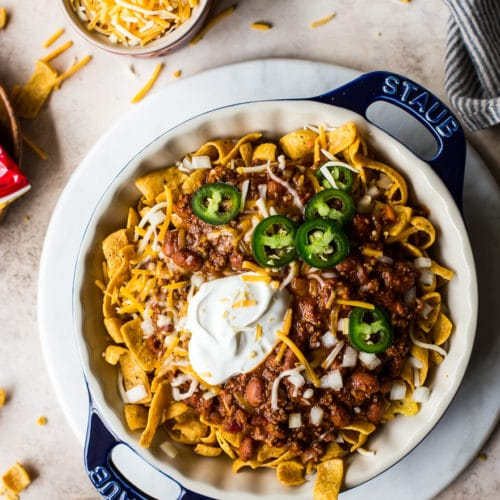

Texas style Frito Pie!

Texas style Frito Pie!
Texas style Frito Pie is A Texas classic! Consisting of three main things. Chili, Fritos chips of course, and cheese!
Frito pie can be made many ways but this Texas style twist is sure to take it to the next level! This is the ultimate way to eat Frito pie!
What you'll need:
- 1 Big ol' bag of Classic Fritos chips
- 1 Can of cooked Chili of your choice- or how many cans you might need- my favorite is Wolf Brand (you can use chili with or without beans)
- Shredded cheese of your choosing (Mexican 4 cheese blend is the best!)
- Sliced Jalapenos
- Sour cream
- Diced Onions
Lets get cooking:
- First things first, add your can(s) of cooked Chili to a pan and get that nice and hot!
Note - Just put the Fritos chips on the side for now we don't need those until it's time to assemble.
- Now go ahead and get your sliced jalapenos ready. you can use either jarred, canned, or even freshly slice them yourself.
- Go ahead and dice up those Onions! (I'm not crying im just sweating from my eyes!)
- get your sour cream ready to scoop
- Finally, once your chili is nice and hot and ready to go grab your Fritos chips and add a nice big layer of fritos onto a plate or bowl
- Bring on the Chili! Pour as much chili as your heart desires all over your fritos chips!
- Lastly, add your cheese, Jalapenos, Onions and sour cream and BAM! you have yourself a big ol' helping of Texas style Frito Pie!
Note to self- Do not wear a white T-shirt while eating this!
Homepage